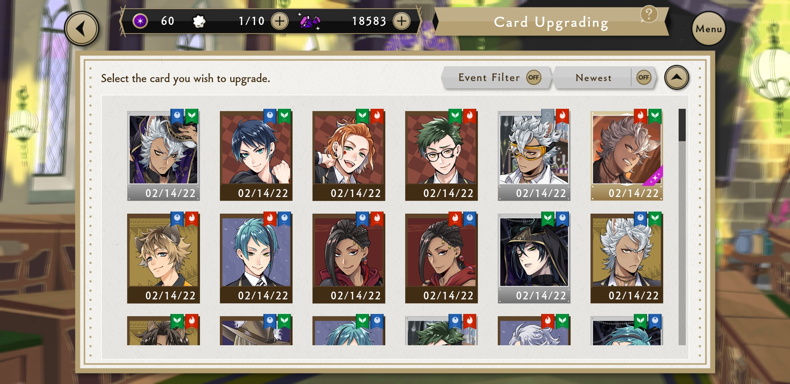
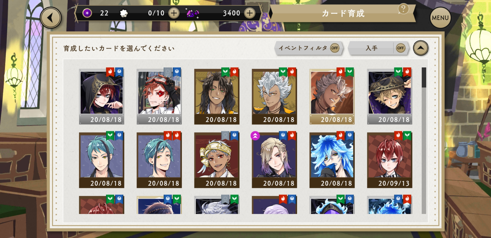
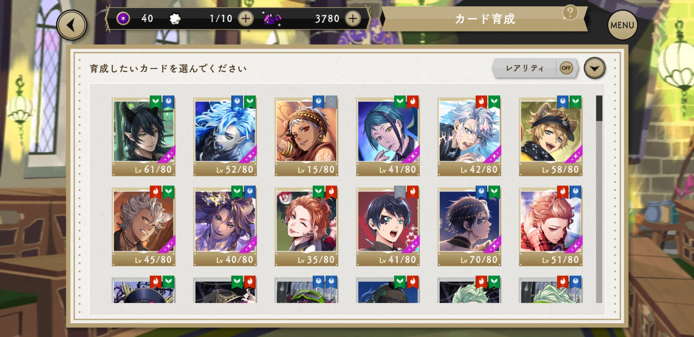

(Updated: April 13, 2022)
Please contact Lilykoi#3864 on Discord or @LilykoiTWST on Twitter for support changes!
My IGN is Lilykoi. I am a 21f junior software developer who loves gacha games, particularly Twisted Wonderland. I grew up with Disney and this game reminds me of the nostalgia from my childhood. My favorites are Jack and Malleus! Secondary favorites include Deuce, Leona, and Idia.
I play both NA and JP. While I began playing Twisted Wonderland NA on Feb. 14, 2022, I acquired my JP account via gametrade.jp on April 10, 2022. It's nice to not have to wait around for my favorite cards to release; however, I still consider NA my main account. I use this website to document everything about my progress -- just for fun!
NA: HURRYK9D
JP: MWRanYk9
Thank you for visiting and feel free to have a look around!
I picked Jack as my first SR because he reminded me of my dog and his birthday is close to mine (4 days after). It wasn't until I read the story that I came to admire his work ethic, strong sense of justice, and loyalty. I also chose Malleus for my third SR because he is TWST's poster boy. So yeah, pretty shallow reasons.
Because I acquired my JP account from a third-party, I had no idea who the starter summons were (I just wanted an account with both grooms and Starry Deuce). To my surprise, it was Jack -- as well as the whole Savanaclaw crew. I'm also quite amused that the eel twins are back to back in their PE uniforms.
my NA account
my JP account
I sadly forgot to take a screenshot of all my beans. All I have is a cute picture of summoning Jack for the first time! I did clear most of the shop besides R Cater. Those R perfumes really add up.
Since this was the first event, I went crazy with it! After about 12 days, I did about 500 20-minute expeditions. It was spring break, so I only had my part-time WFH job. And yes, I did end up losing quite a bit of sleep over this. For my efforts, the gacha blessed me with Azul and Leona.